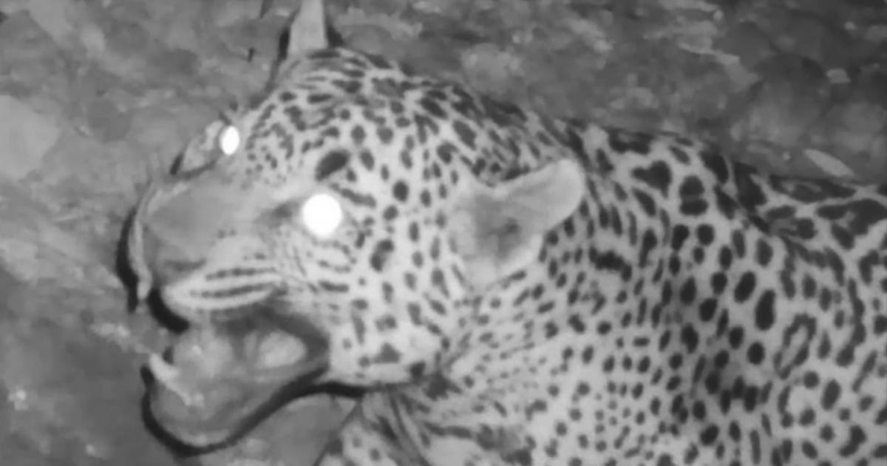

Endangered jaguar previously unknown to U.S. is caught on camera in ArizonaThere's been another jaguar sighting in southern Arizona and it's the eighth different jaguar documented in the southwestern U.S. since 1996, according to wildlife officials. Jason Miller, a hobbyist wildlife videographer who posts trail camera footage online, captured the image of a roaming jaguar late last month in the Huachuca Mountains near Tucson, CBS affiliate KPHO-TV reported. A spokesman for the Arizona Game and Fish Department said the agency has authenticated Miller's footage and has confirmed this is a new jaguar to the United States. The animals were placed on the endangered species list in 1997 after being removed in 1980. The U.S. Fish and Wildlife Service has designated about 750,000 acres of critical protected habitat for the jaguars along the border in southern Arizona and New Mexico. Authorities said Arizona jaguars are part of the species' northern population, including Sonora, Mexico's breeding population. "I'm certain this is a new jaguar, previously unknown to the United States," said Russ McSpadden, a southwest conservation advocate at the Center for Biological Diversity. "After being nearly wiped out, these majestic felines continue to reestablish previously occupied territory despite border wall construction, new mines, and other threats to their habitat." Officials said the rosette pattern on each jaguar is unique - just like a human fingerprint - and helps identify specific animals. The new video shows that the cat is not Sombra or , two jaguars known to have roamed Arizona in recent years. Last year, officials said El Jefe — or "The Boss" — the heavily guarded U.S.-Mexico border. The gender of the newly spotted jaguar is unclear. "Whether male or female, this new jaguar is going to need a mate. Now is the time for us to have a serious conversation and take action to bring jaguars back," Megan Southern, jaguar recovery coordinator with The Rewilding Institute, told Phoenix TV station KPNX. Jaguars are the only big cat found in the Americas and third-largest cat in the world after tigers and lions, according to National Geographic. KPHO-TV reports they've been seen on the South Rim of the Grand Canyon, in the mountains of Southern California, and even in Louisiana. for more features. |
 |